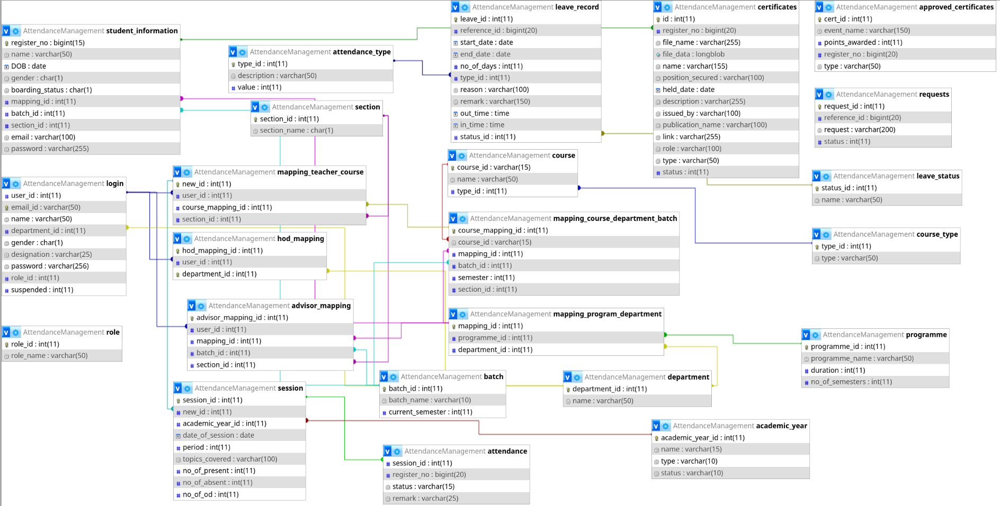
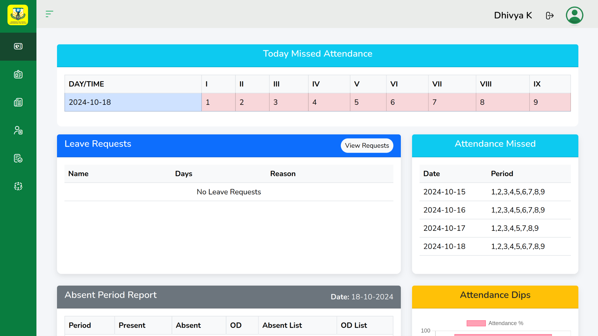
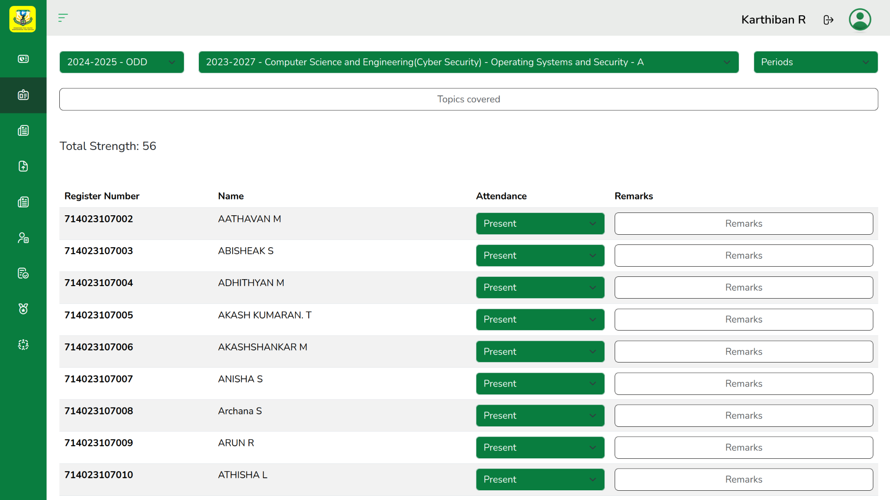
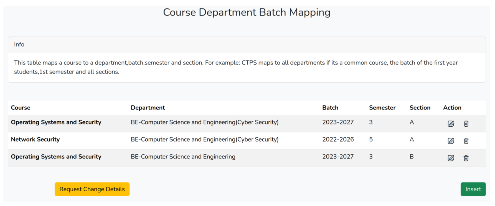
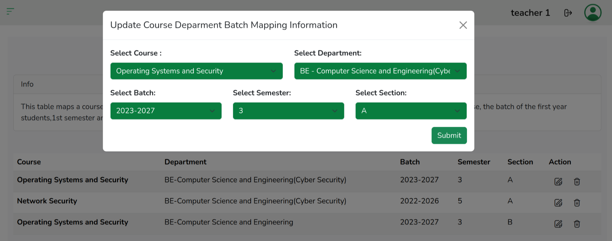

Student Management System(SMS)
A full stack web app developed with HTML, Bootstrap, JavaScript, Jquery, PHP and MySQL designed to help faculty and students manage various academic and administrative activies.
Developed with the help of:
The application will be primarily used for automating log generation and the attendance of each class.It also has many features such as requesting and approving leaves, a front-end for database upload and editing and dashboards for various roles.
I'll try to explain all the features that we worked on and the things we learned as we developed the app.
Designing the database
Here's the final ER diagram of the database that we developed:
Most of the tables are self-explanatory except for the mapping ones. The mapping_teacher_course table lets the admin specify the teacher and the class taught by them along with the section. This is useful for the attendance.
the mapping_course_department_batch will be the table that is used to uniqely identify the course for each class even if the course is technically the same.What I mean by this is that if there's a course for Python, it's almost certain that it'll be taught in multiple departments. This table will help differentiate between them.
The mapping_program_department will be used to specify the programme(degree) for each department(such as BE,B.Tech).
Some of the tables were added as we were developing the app and explaining everything now will just confuse us without knowing the functionality of the app.
GitHub
Before we start, let me introduce you to our lord and saviour...GitHub.
We were six people working on different parts of the project seperately. Currently it consists of approximately 200 files, there's no way we could have managed all the files and integrated them together without using Git and GitHub. This project helped me realise just how valuable a distributed version control system is.
The Login Page
We decided to have the same login page for both students and teachers.The students can login using their register number and teachers will use their email.With this constraint in place, we can just check if the username entered is a number, if it is, we can check the student table, otherwise we check the teacher table.
We also check if an active session exists, if it does, we just redirect them to their respective dashboard. Otherwise we set the session and redirect.
Role based Dashboards
Since an institute can have multiple roles such as Staff,Head of Department and Principal, We have structured the roles based on our college. The role is stored in the session and most roles have their seperate dashboard. We also check the role_id before rendering each page to ensure that no one tries to access the dashboard of a higher role directly through the url.
Here's what the Advisor dashboard looks like.
The Attendance Page
This was what we first worked on. The teachers can select the class and the student data for that class gets loaded dynamically using AJAX. This was my first time using ajax and loading content on the page without reloading it was quite fascinating. 
Database Upload Functionality
We also worked on making a frontend for uploading,editing and deleting entries in the database without having to type queries. It also supports bulk uploads for easier upload of massive data.The insert functionalty was pretty easy to implement, just a form that sends a POST request to a php file that will upload the data.
The update and delete functionality were a bit trickier, I had to edit the table to have hidden input fields that store the id's of the fields and then use AJAX to dynamically select the data when a user clicks edit. Once the edit is done, instead of refreshing the page we used ajax to update the rows dynamically.
